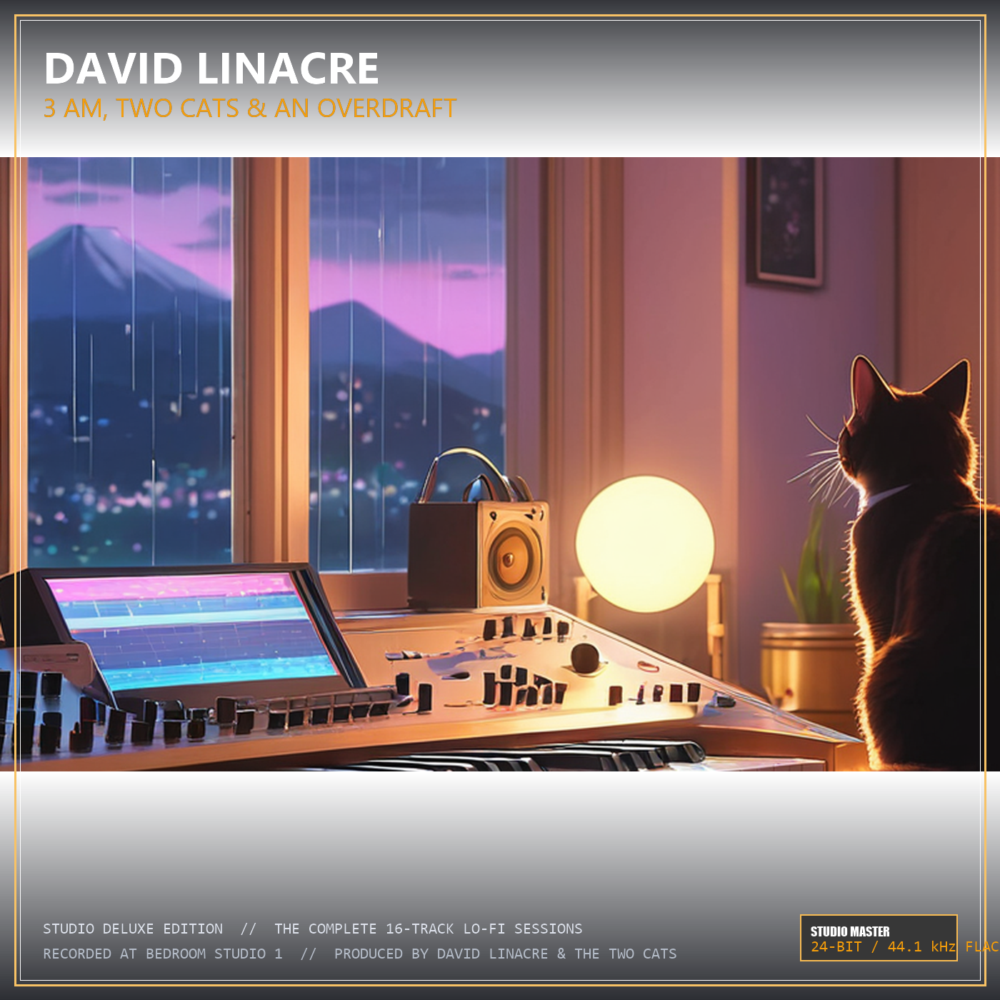

DL
David Linacre
Studio Master Edition (2026)
● Live Web Player
EBU R128 Mastered
24-Bit / 44.1 kHz
NOW PLAYING // TRACK
01
Two Cats, Zero Pounds (Genesis at 3 AM)
David Linacre • 3 AM, Two Cats & An Overdraft (2026)
D♭ Major
78 BPM
00:00
02:20

3 AM, Two Cats & An Overdraft
David Linacre (2026)